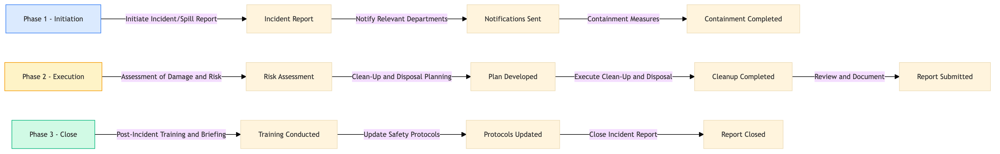

Chemical & Hazardous Material Safety Management
Safety & Emergency Management · 10 L4 steps · 3 phases · 1 decision gates · Updated 2026-03-28 16:18
📊
Process Flow Diagram (BPMN)

Click diagram to open fullscreen | Scroll to zoom | Drag to pan
🏊
Swim Lane — Roles & Responsibilities
Role / Actor
Process Steps Owned
Safety & Emergency Management Officer
1.1: Initiate Incident/Spill Report 1.2: Notify Relevant Departments 2.1: Assessment of Damage and Risk 2.2: Clean-Up and Disposal Planning 2.3: Execute Clean-Up and Disposal 2.4: Review and Document 3.1: Post-Incident Training and Briefing 3.2: Update Safety Protocols 3.3: Close Incident Report
Stateroom Attendant
1.3: Containment Measures 2.3: Execute Clean-Up and Disposal
F&B Manager
1.3: Containment Measures 2.3: Execute Clean-Up and Disposal
Guest Services Officer
3.1: Post-Incident Training and Briefing
Environmental Compliance Officer
2.1: Assessment of Damage and Risk 2.2: Clean-Up and Disposal Planning 2.4: Review and Document
📋
L4 Process Steps
| Step | Step Name | Role | System | Input | Output | KPI | Dec? | Exc? | Pain Point |
|---|---|---|---|---|---|---|---|---|---|
Phase 1 1.1 |
Initiate Incident/Spill Report | Safety & Emergency Management Officer | Oracle Hospitality Cruise SPMS | Incident report form | Incident recorded in SPMS | Response time < 5 minutes from detection | Y | N | Delayed reporting of spills |
| 1.2 | Notify Relevant Departments | Safety & Emergency Management Officer | Oracle Hospitality Cruise SPMS, Royal Caribbean App | Incident details | Notifications to crew, medical team, and port authorities | Notification time < 2 minutes from incident report | N | Y | Miscommunication of incident details |
| 1.3 | Containment Measures | Safety & Emergency Management Officer, Stateroom Attendant, F&B Manager | Oracle Hospitality Cruise SPMS | Incident report and containment procedures | Contamination contained and secured | Containment completed within 10 minutes | N | Y | Failure to contain spill effectively |
Phase 2 2.1 |
Assessment of Damage and Risk | Safety & Emergency Management Officer, Environmental Compliance Officer | Oracle Hospitality Cruise SPMS, Environmental compliance systems (MARPOL, BWTS, AWTS) | Incident details and environmental impact assessment | Risk assessment report | Assessment completed within 15 minutes | N | Y | Inaccurate risk assessment |
| 2.2 | Clean-Up and Disposal Planning | Safety & Emergency Management Officer, Environmental Compliance Officer | Oracle Hospitality Cruise SPMS, Environmental compliance systems (MARPOL, BWTS, AWTS) | Risk assessment report | Clean-up and disposal plan | Plan developed within 20 minutes | N | Y | Lack of effective clean-up procedures |
| 2.3 | Execute Clean-Up and Disposal | Safety & Emergency Management Officer, Stateroom Attendant, F&B Manager | Oracle Hospitality Cruise SPMS | Clean-up and disposal plan | Area cleaned and hazardous materials disposed of safely | Cleanup completed within 30 minutes | N | Y | Inadequate cleanup of hazardous materials |
| 2.4 | Review and Document | Safety & Emergency Management Officer, Environmental Compliance Officer | Oracle Hospitality Cruise SPMS | Incident details and clean-up results | Incident review report | Report submitted within 45 minutes | N | Y | Incomplete incident documentation |
Phase 3 3.1 |
Post-Incident Training and Briefing | Safety & Emergency Management Officer, Guest Services Officer | Royal Caribbean App | Incident review report | Training materials and briefing sessions conducted | Training completed within 60 minutes post-incident | N | Y | Insufficient training on hazardous material handling |
| 3.2 | Update Safety Protocols | Safety & Emergency Management Officer, Environmental Compliance Officer | Oracle Hospitality Cruise SPMS | Incident review report and safety protocols | Updated safety protocols | Protocols updated within 72 hours post-incident | N | Y | Outdated safety protocols |
| 3.3 | Close Incident Report | Safety & Emergency Management Officer | Oracle Hospitality Cruise SPMS | Incident review report and updated safety protocols | Incident report closed with final status | Report closure within 24 hours post-incident | N | Y | Prolonged open incidents |
📋